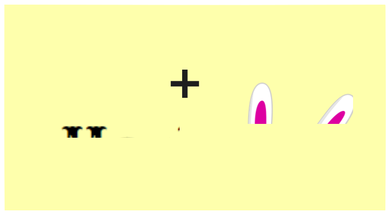
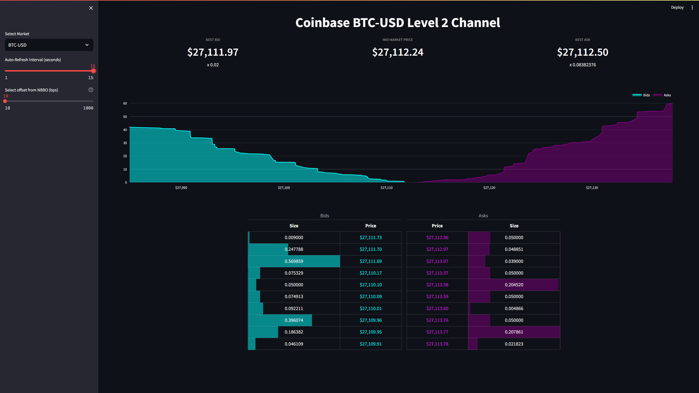

Tyler Hillery
Blog
Notes
Projects
On this page
Blog
Edit this page
Report an issue
Blog
Order By
Default
Title
Date - Oldest
Date - Newest
Author

Tyler Tries Publishing a Python Package to PyPI
My experience developing a python package and publishing it to PyPI.
Dec 28, 2023
Tyler Hillery

Tyler Tries Real-Time Data
My experience building a real-time data pipeline to visualize Coinbase order book depth, highlighting the seamless integration of Redpanda, Materialize, dbt, and Streamlit.
Oct 1, 2023
Tyler Hillery
Building a Local (Data) Lakehouse - Part 1: The Blueprint
Local (Data) Lakehouse is a personal sandbox environment to quickly spin up various tools for me to explore new ideas and learn.
Jun 26, 2023
Tyler Hillery
Why and How I Made My First Open Source Contribution
My experience on why and how I made my first open source contribution and why you should too.
Jul 12, 2022
Tyler Hillery
Make a Public Commitment to Learn
Making your learning public can help you stick to your goals. Find ways to communicate to others what your learning about. That is why I built the learning log.
May 31, 2022
Tyler Hillery
Stock Market Data Pipeline
I wrote about my experience on setting up a data pipeline to help extract, ingest, store, transform and visualize stock market data using open source technologies such as Airbyte, Dagster, dbt & Preset.
Mar 30, 2022
Tyler Hillery
No matching items